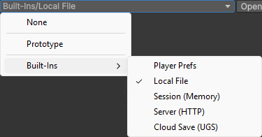
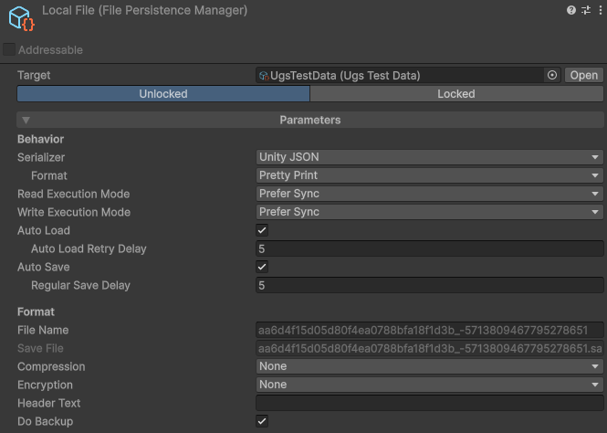
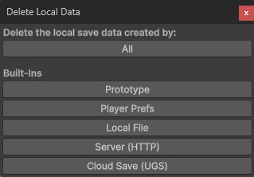

Local Saving
A persistence manager is what saves and loads a persistent object. You pick one from the dropdown at the top of the object's inspector, and can switch at any time without touching code. The package ships several local ones, plus two that save to a server or the cloud (see Cloud & Remote).

Which one?
- Just starting, or prototyping? Use Prototype. Zero setup, works everywhere.
- Want control over the file (compression, anti-tamper, backups, a custom path)? Use Local File.
- Small data, like settings or a high score? Player Prefs.
- State you want within a play session but never across them? Session (Memory).
- Saves that follow the player across devices? Cloud Save (UGS) or Server (HTTP).
A common path: start on Prototype, then switch to Local File (or a cloud manager) when you need its options. Because the choice is data on the asset, switching is a dropdown change, not a refactor.
Prototype
The zero-configuration manager, and the recommended starting point. It is also what new persistent objects are assigned by default (changeable in Settings). It writes one save file per object under the platform's persistent data path, on desktop, mobile and WebGL, with nothing to configure. It is synchronous and dependency-free.
- No settings: auto load, auto save and the regular save timer are all on and fixed.
- Editor-safe: in the editor its saves live in the project's UserSettings folder, so play mode never clobbers the saves of an installed build of your game.
- When to move on: switch to Local File the moment you want compression, encryption, backups, a custom file name, or async saving.
Local File
The full-featured local manager: it saves to files on the player's device and exposes every knob you are likely to want. It supports both synchronous and asynchronous operations.

- File Name: override the file name and optionally place it in subfolders (no extension).
- Compression:
None,Fast, orOptimalgzip. - Encryption:
None,Append Hash(tamper-proof but readable), orEncrypt(fully encrypted). See the security guide. - Lock Save To: tie protected data to the machine, the file location, and/or a runtime secret.
- Header Text: a free line at the top of the file that players can edit without breaking the save.
- Do Backup: keep a second copy as extra insurance on top of the atomic write, so even an unreadable primary still has a fallback.
- Auto Load / Auto Save / delays: full control over the automatic behavior and timing.
- Read / Write Execution Mode: prefer synchronous or asynchronous. Under a Prefer mode the safe-point saves (on quit, unload, focus loss) still run synchronously; set Async Only and they run asynchronously too, where a save can fail if it overruns its timeout.
Compression, encryption and the related options also have practical guidance in Securing saves.
Player Prefs
Stores saves through Unity's PlayerPrefs. Synchronous, simple, and a good fit
for small amounts of data (settings, a high score). It works on every platform, WebGL
included. Every key it writes is prefixed so the package can recognize and clear them.
For larger or structured saves, prefer Local File: Player Prefs is not designed for big blobs and offers none of the file manager's protection or backup options.
Session (Memory)
Keeps saves in memory only, for the current session. Nothing is ever written to disk, so all data is gone when the game closes or you leave play mode, and each session starts empty. Saves and loads still go through the normal API.
Use it for state you want within a play session but never across them: a checkpoint within a level, a quick stand-in while prototyping, or test scaffolding.
Server & Cloud
Two more built-in managers save off the device:
- Server (HTTP): save to your own server over HTTP.
- Cloud Save (UGS): save to Unity Gaming Services Cloud Save, per signed-in player.
Both can keep the game playable offline through a local cache. They have their own page: Cloud & Remote.
None
Selecting None opts the object out of persistence: it behaves like a plain ScriptableObject, with no saving or loading.
Deleting local data
To wipe local saves while developing (to retest the first-launch experience, for example), open Tools > Persistent Asset > Actions > Delete Local Data. It lists every manager that exposes local data and lets you delete one, or all of them.

Clear() on the manager (or Persistence.ClearAll(),
see Core Concepts).